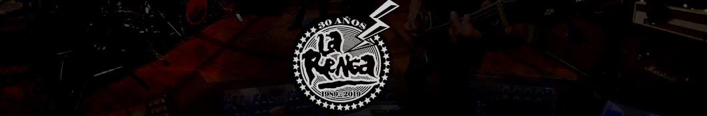
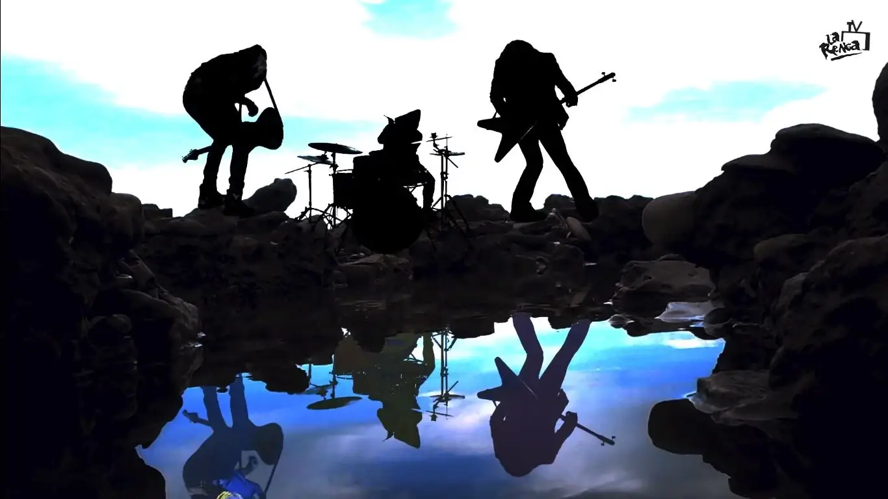
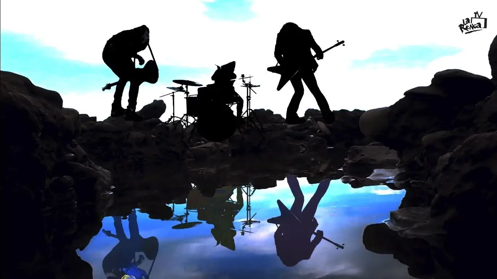

BIOGRAFÍA
En enero de 1988, cinco chicos de Mataderos festejaban el año nuevo tocando covers de Creedence Clearwater Revival. Pocos meses después, ya bautizados como La Renga, ensayaban intensamente para las presentaciones en los clubes de barrio.
Chizzo Nápoli terminó el servicio militar y de vuelta con Locura en guitarra buscaron un bajista. Teté Iglesias fue contactado junto con su hermano, el baterista Tanque Iglesias, y ambos participaron desde los comienzos del grupo. El Iglesias de los parches integraba una banda de metal, a la cual abandonó por las presiones que le causaban ambos ensayos junto con el trabajo.
La Renga se arma con vestigios de hard rock e influencias de blues, el 31 de diciembre de 1988 y se destacó siempre por contar con una producción absolutamente independiente, pese a luego pasar unos años dentro del sello discográfico Universal.
En abril de 1994, y sin más difusión que los cassettes piratas repartidos por ellos mismos entre los fans (el más importante fue “Esquivando charcos”, incluso reeditado en 1998 por Polygram), el grupo se presentó en Stadium ante 2.500 personas. El fenómeno rengo se repitió al mes siguiente: 3 mil espectadores en la 9 de Julio recordaban a Wálter Bulacio para escuchar a La Renga, Los Caballeros de la Quema y Los Piojos. Editaron, entonces, “A dónde me lleva la vida”, el álbum debut, que no tuvo demasiada difusión.
La Renga no gozaba de los privilegios de la exposición en los medios de comunicación y siendo además reacios a conceder entrevistas, fueron forjando su popularidad a través del boca a boca que llevaban a cabo los fanáticos. Más luego, con el nombre de “Bailando en una pata”, editaron un álbum totalmente en vivo, integrado por viejas canciones y otros inéditos, y registrado en las presentaciones de Obras Sanitarias a comienzos de 1995. Regresaron para tocar en Obras, en noviembre de ese año, y enfrentaron una denuncia por apología del delito por su canción “Blues de Bolivia”.
El exitoso álbum “Despedazado por mil partes” se editó en 1996, producido en colaboración con Ricardo Mollo. Fue presentado con cuatro recitales en Obras y produjo un gran crecimiento del público que siguió a la banda en cada fecha. Con este material llegó la primera gira por México y Estados Unidos, en 1997. Al año siguiente participaron del show en homenaje a los 20 años de las Madres de Plaza de Mayo, junto a León Gieco, Divididos, Las Pelotas, Los Piojos,Todos Tus Muertos, A.N.I.M.A.L., Attaque 77 y Actitud María Marta, entre otros. Siempre del lado de la solidaridad, en 1998 también reclamaron por la educación en Argentina: el 1º de enero se presentaron en la Carpa de la Dignidad de los docentes argentinos para colaborar con la causa.
La gira de 1998 llevó a La Renga por el resto de las provincias argentinas, y además por Uruguay y España. Ese mismo año editaron el disco de la estrella, o simplemente el álbum homónimo, que contenía “El revelde”. La presentación se hizo con dos shows en el estadio porteño de Atlanta, con Los Piojos como invitados, en los que convocaron a 50 mil personas, además de mostrarlo en una serie de 22 recitales por las provincias argentinas. En 1999, se produjo uno de los hitos más importantes de la agrupación de Mataderos: convocaron nada menos que 60 mil personas al estadio de Huracán.
Con el paso del tiempo, La Renga consiguió algo fuera de lo común en el negocio discográfico: logró imponerle a la compañía (Universal) sus propias reglas de juego, elevando el porcentaje de regalías del clásico 3% a alrededor del 20% por el álbum “La esquina del infinito”. El material que vendió 40 mil copias.
El trío rechazó en diversas oportunidades propuestas para tocar en recitales gratuitos organizados por el Gobierno. También le dijeron no a sponsors relacionados con las bebidas alcohólicas que organizaban festivales.
Pero aquella historia del segundo show de Huracán (mayo de 2001) quedó registrada en la película conocida como “Insoportablemente vivo”, y estrenada en algunos cines no demasiado comerciales del país. El film fue dirigido por Diego Stokelj, también responsable de algunos videoclips. El lanzamiento fue acompañado por un disco doble, con dos temas inéditos.
El crecimiento de la banda porteña logra un punto aún más importante cuando lograron convocar 70 mil personas en el estadio de River Plate. Junto con la entrada al show se vendió un EP con tres canciones, llamado “Documento único”. La convocatoria de La Renga siguió en aumento. “Detonador de sueños” fue editado en 2003 y presentado en el estadio Chateau Carreras de Córdoba. En 2004 presentaron el disco otra vez en la cancha de River.
Aquel concierto del 4 de diciembre de 2004 fue registrado con 16 cámaras y editado en el DVD “En el ojo del Huracán”, con las más de dos horas de show, el backstage, el montaje del escenario circular en el medio de la cancha y un libro de 96 páginas.
El grupo siguió tocando y tras dos años de conciertos llegó “Truenotierra”, lanzado a fines de 2006 con material totalmente inédito, grabado en los estudios propios y masterizado por Álvaro Villagra en Del Abasto. Dividido en dos discos, el primero contiene 12 tracks. La segunda parte contiene cinco instrumentales. Fue estrenado a los pocos días (el 16 de diciembre), en el estadio mundialista de Mar del Plata, ante 30 mil personas, bajo un temporal.
Durante el 2007, La Renga continuó con una gira por varias provincias y por España, Chile, Uruguay y Paraguay. La presentación en Capital Federal fue el 17 de noviembre, en el autódromo de Buenos Aires, ante unos 90 mil espectadores. Con esa entrada, la banda adjuntó, fiel a su estilo original, un DVD con cuatro videos.
 

Los shows fueron engrosando esta extensa trayectoria. Se presentaron en el Festival de la Huella Invisible que tuvo lugar en Santa María de Punilla (a unos 50 kilómetros de Córdoba capital), organizado por la propia banda. La excusa: comenzar los festejos por los 20 años de trayectoria. Formaron parte de la grilla: El Tri (México), Koma (España), Lovorne, MAD, Los Violadores, Los Gardelitos, Viticus y Edelmiro Molinari.
El siguiente material de estudio de La Renga se conoció recién a fines de 2010. “Algún rayo” salió en el ya conocido formato entrada-disco: con el disco físico se incluyó un ticket para alguna de las presentaciones programadas del grupo por casi todo el país.
En 2011, el combo rengo emprendió una gira por toda Argentina y países vecinos presentando “Algún rayo”. Durante el recital del 30 de abril en la ciudad de La Plata, Miguel Ramírez, un joven de 32 años, sufrió un impacto de una bengala en el lado derecho de su cuello y murió unos días después, el 9 de mayo. La Renga decidió postergar la gira para “hallar en la reflexión un camino a seguir”, decía una una parte el mensaje que el grupo transmitió, para finalmente retomar la actividad el 15 de octubre en Jesús María, Córdoba. La Renga reprogramó la gira con fechas en Uruguay, Chaco y Chile y finalizó esta serie de conciertos en abril de 2012, en Tucumán.
En 2013, Chizzo, Tanque, Teté y el resto cerraron los festejos por los 30 años de la Democracia en Argentina, en una jornada donde además participaron León Gieco y otros artistas. Como dato característico: fue la primera vez en toda su historia que La Renga permitió televisar en vivo uno de sus conciertos. A fines del años siguiente salió a la venta “Pesados vestigios” que fue grabado en la sala/estudio que la banda surgida en Mataderos tiene en Ezeiza.
El show de abril de 2017 en el Autódromo de San Juan fue cancelado por el Gobernador de la Provincia, por la inseguridad que le causaba lo sucedido en un concierto de Indio Solari, en Olavarría. A La Renga también le negaron otros lugares pero la enorme gira “Pesados vestigios” pasó por Bragado, Rosario, Villa Rumipal, Baradero y Chile, entre otros lugares.
En octubre 2019, como comienzo de los festejos por los 30 años de la banda, La Renga adelantó dos temas que integrarían el décimo disco de estudio: “Llegó la hora” y “Parece un caso perdido”.
El 24 de junio de 2020, La Renga estrena "En Bicicleta". El 23 de noviembre lanza “El Que Me Lleva” es el sexto adelanto del nuevo trabajo de la banda y anuncia su show vía streaming para el 28 de noviembre a las 23 horas. A principio de junio anuncia un show vía streaming para el 19 de junio a las 22 horas. El 20 de junio la banda estrena el single "Buena pipa", el séptimo adelanto de su nuevo disco.
El 4 de febrero de 2022 lanza el álbum "Alejado de la red".
El 26 de enero de 2023 lanzan el videoclip en vivo de "Triste canción de amor", un registro del recital en la ciudad de Mercedes, Buenos Aires.